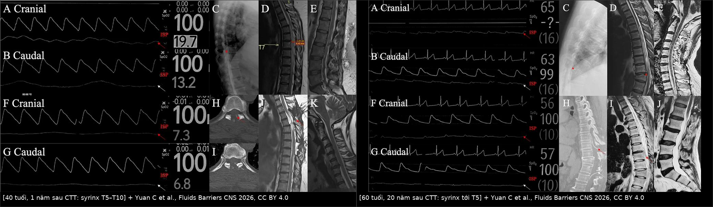
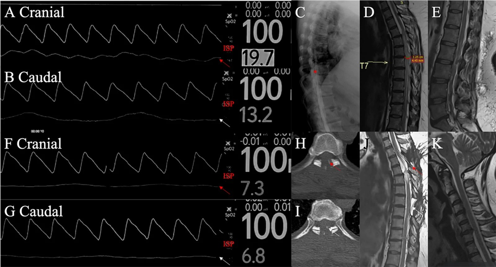
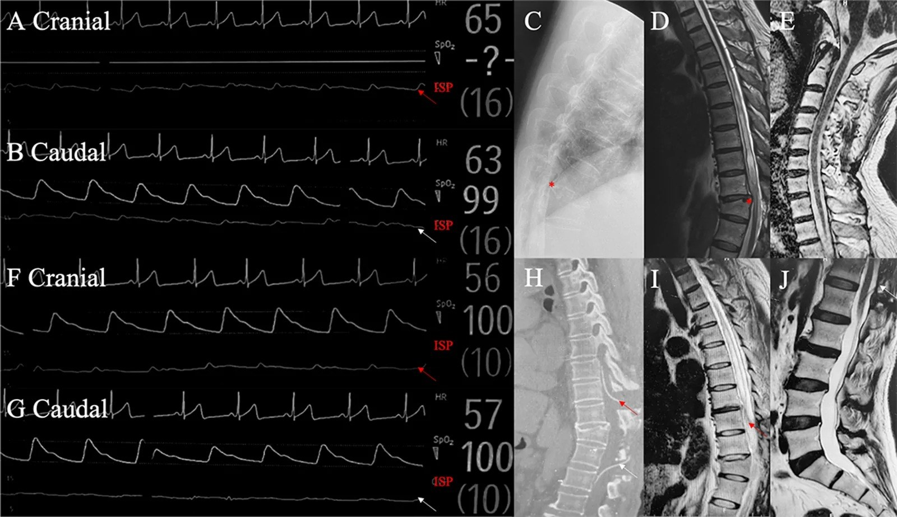
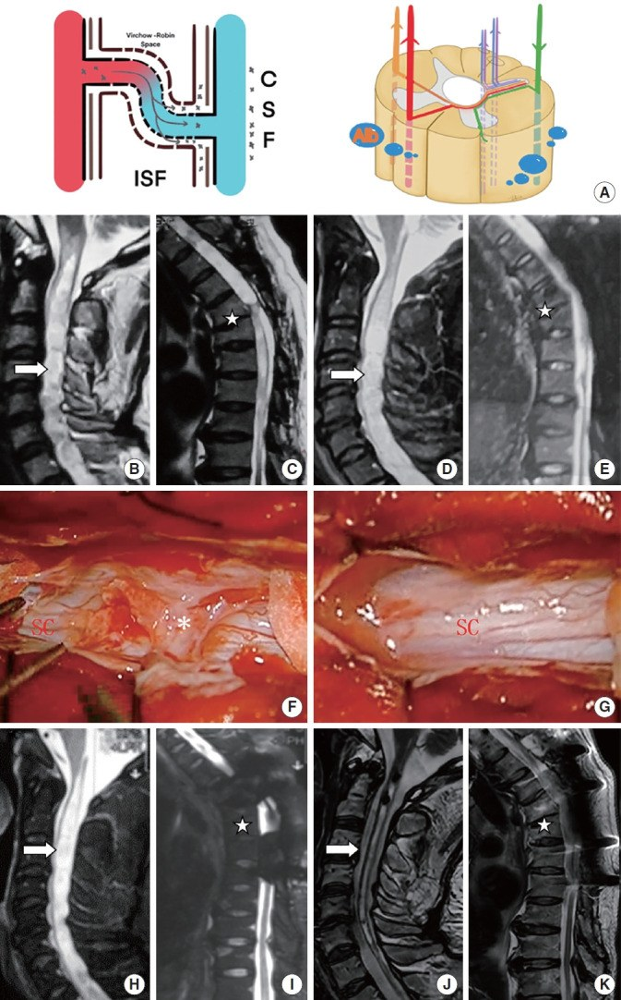

254 — Giãn tủy sau chấn thương tủy sống: bệnh nhân "xấu đi sau giai đoạn ổn định" / Post-traumatic syringomyelia
Tags: pattern:gian-tuy pattern:viem-tuy vung:tuy-song protocol:MRI-tuy-co-gadolinium protocol:MRI-dong-hoc-csf
Mức chắc chắn (certainty): tổng hợp y văn (literature synthesis) — số liệu từ đoàn hệ 64 bệnh nhân được phẫu thuật bắc cầu dưới nhện–dưới nhện (subarachnoid–subarachnoid bypass, S-S bypass) tại Xuanwu, theo dõi trung bình 23,6 tháng (PMC13523516, Fluids Barriers CNS 2026) và đoàn hệ 56 ca so sánh bóc dính màng nhện với đặt shunt (PMC10992642, Neurospine 2024). Bốn ca minh họa trong bài là ca nguyên văn của bài gốc.
Bài này nối tiếp 223 – Chấn thương tủy sống: ASIA & SCIWORA (giai đoạn cấp) và 226 – Tủy mềm không do chấn thương (nhồi máu tủy, SDAVF, NMO). Câu chốt: bệnh nhân chấn thương tủy đã ổn định rồi đau/yếu tăng dần — nghĩ tới giãn tủy tiến triển, không phải "di chứng cố định".
1. Tổng quan — vì sao tủy bị chấn thương lại sinh ra khoang dịch
- Bệnh học: sau chấn thương, dính màng nhện (arachnoid adhesions) và sẹo mô đệm tại vùng tổn thương chặn dòng DNT lưu thông → chênh áp lực dịch trong ống sống, DNT bị đẩy vào tủy qua vùng hàng rào máu–tủy đã vỡ (blood–spinal cord barrier, BSCB) → khoang dịch lan dọc trong tủy (syrinx). Ba yếu tố cùng lúc: tắc dòng DNT + chênh áp lực + hàng rào máu–tủy hỏng.
- Vì sao hình ảnh trông như vậy (vật lý):
- T2 sáng đồng tín hiệu DNT = khoang dịch tự do (không phải mô); T1 tối, không ngấm thuốc, không hạn chế khuếch tán (khác áp-xe).
- Tủy giãn (cord expansion) vì khoang dịch choán chỗ; mất tín hiệu dòng chảy (flow void) quanh tủy khi dính màng nhện dày.
- Myelomalacia (tủy mềm) = vùng T2 sáng ranh giới mờ, không tạo khoang, không giãn tủy — khác syrinx.
- Ngưỡng định lượng nằm lòng:
- Tần suất: giãn tủy sau chấn thương gặp ở khoảng 20% bệnh nhân chấn thương tủy sống (theo phần mở đầu của đoàn hệ Neurospine 2024; y văn cũ nêu 1–4% ca có triệu chứng, tới 28% trên MRI) — tức phần lớn không triệu chứng, chỉ theo dõi.
- Thời điểm: từ 3 tháng đến nhiều thập kỷ sau chấn thương; 4 ca minh họa của bài gốc xuất hiện sau 1 năm, 15 năm, 20 năm và 2 năm sau mổ thất bại.
- Triệu chứng: đau (neuropathic, theo khoanh) là triệu chứng sớm và hay gặp nhất; kèm mất cảm giác đau–nhiệt kiểu "treo" (suspended dissociation) trong khi cảm giác sâu còn, yếu/spasticity tăng dần, rối loạn cơ tròn, ra mồ hôi bất thường trên mức tổn thương.
- Kết cục phẫu thuật: bóc dính màng nhện cải thiện < 50% bệnh nhân PTS (so với 80% ở giãn tủy do Chiari); S-S bypass: 71,9% (46/64) cải thiện thần kinh sau 23,6 tháng; shunt tủy–phúc mạc là cứu cánh khi bypass thất bại (ca 4).
- Yếu tố tiên đoán hồi phục sau S-S bypass: gradient áp lực nội ống sống (intraspinal pressure, ISP) trước mổ > 1,5 mmHg (Se 93,48% / Sp 66,67%); biên độ ISP phía trên tổn thương > 3,5 mmHg (Se 82,61% / Sp 94,44%); cầu nối < 5,5 đốt sống (Se 100% / Sp 44,44%).
- Chọn shunt thay vì bóc dính: QAlb (albumin DNT/huyết thanh) > 12,67 dự đoán cần shunt với Se 80,95% / Sp 100%; QAlb cao hơn có ý nghĩa ở nhóm shunt so với nhóm bóc dính (p < 0,001).
2. Mẫu hình + chẩn đoán phân biệt theo vị trí (Gamut)
A. Khoang dịch NỘI TỦY (gamut chính):
- Giãn tủy sau chấn thương (PTS): khoang liên tục, bờ nhẵn, lan dọc từ mức tổn thương, tủy giãn, dính màng nhện ở đầu trên/dưới khoang, mất flow void.
- Giãn tủy do Chiari I / dính màng nhện nguyên phát: khoang từ ống trung tâm cổ cao, kèm hạnh nhân tiểu não thấp ≥ 5 mm; bóc dính hiệu quả hơn nhiều so với PTS (80%).
- U nội tủy có nang (ependymoma/hemangioblastoma): nốt đặc ngấm thuốc trong/thành nang — không được bỏ khi đọc "syrinx".
- Áp-xe nội tủy: DWI hạn chế trong khoang, ngấm vòng, sốt.
- Myelomalacia: T2 sáng không tạo khoang, không giãn tủy — di chứng cũ, không mổ.
- Nhồi máu tủy (artery of Adamkiewicz): khởi phát đột ngột, DWI hạn chế, phân bố 2/3 trước tủy.
B. Dấu hiệu đi kèm phải tìm (đừng chỉ nhìn khoang dịch):
- Dính màng nhện (arachnoid web/adhesion) — màng mỏng ngang khoang dưới nhện, "scalpel sign" ở mặt lưng tủy ngực; là nguyên nhân chữa được.
- Hẹp ống sống tại chỗ / gù / dụng cụ cố định — đánh giá trên CT; di lệch dụng cụ có thể là nguyên nhân.
- Tụ dịch dưới màng cứng (pseudomeningocele) sau mổ — chèn ép ngoài tủy.
- Rò DNT hoặc nhiễm trùng vết mổ ở bệnh nhân có dụng cụ.
C. Ba câu hỏi lọc trước khi kết luận "di chứng cố định":
- Bệnh nhân có giai đoạn ổn định rồi xấu đi không? Có → chụp lại MRI, đừng gán cho "di chứng".
- Đau có tính chất thần kinh theo khoanh, tăng dần? Có → nghĩ syrinx.
- Có nốt ngấm thuốc trong khoang không? Có → loại trừ u trước khi mổ syrinx.
3. Bảng so sánh phân biệt (ma trận đối chiếu)
| Thực thể (entity) | Hình ảnh điển hình | Chốt vào (rule-in) | Chốt loại (rule-out) | Gợi ý xác nhận |
|---|---|---|---|---|
| Giãn tủy sau chấn thương (PTS) | Khoang T2 sáng = DNT, lan dọc từ mức tổn thương, tủy giãn, dính màng nhện đầu khoang, không ngấm, không hạn chế DWI | Tiền sử chấn thương + xấu đi sau ổn định + khoang liên tục bờ nhẵn | Nốt đặc ngấm thuốc → u; DWI hạn chế → áp-xe | MRI toàn tủy T2/T1 ± Gd; CT myelography khi cần thấy dính; đo ISP nếu mổ |
| U nội tủy (ependymoma) | Khối đặc ngấm thuốc, ± nang, ± xuất huyết, phình tủy khu trú | Nốt ngấm trong/thành khoang + bờ không đều | Khoang trơn, không nốt, nhiều năm ổn định → syrinx | MRI + Gd; mô bệnh |
| SDAVF | Flow void quanh tủy, phù lan dài từ nón tủy, tủy không giãn nhiều, ngấm mờ lan tỏa | Flow void + phù dài + nam > 50 tuổi, nặng khi đứng | Khoang dịch rõ + không flow void → syrinx | DSA tủy (chuẩn); MRA |
| NMOSD/viêm tủy cắt ngang | LETM ≥ 3 đốt, trung tâm "H-sign", ngấm mảng, không khoang | AQP4/MOG dương + LETM + viêm dây thị | Khoang dịch bờ nhẵn → không phải | AQP4/MOG; MRI não |
| Dính màng nhện / web lưng (dorsal arachnoid web) | "Scalpel sign": màng ngang đẩy tủy ra trước, flow void mất, ± syrinx | Màng ngang + tủy bị đẩy ra trước + xấu dần | Không thấy màng ngang, dính lan tỏa → PTS | MRI 3D T2 CISS/DRIVE; CT myelography |
| Myelomalacia | T2 sáng ranh giới mờ, không khoang, tủy teo chứ không giãn | Không khoang + teo tủy + ổn định lâu năm | Có khoang + giãn tủy → syrinx | MRI; so phim cũ |

Trái: nữ 40 tuổi, 1 năm sau chấn thương tủy ngực, syrinx T5–T10; gradient ISP trước mổ 6,5 mmHg, bắc cầu T4–T7 → đi lại được, duy trì 2 năm, MRI hết phù và hết syrinx. Phải: nam 60 tuổi, 20 năm sau chấn thương T11, syrinx lan tới T5 nhưng không có sóng áp lực bất thường; bắc cầu T10–L1 chỉ ổn định, không cải thiện, MRI không đổi. Cùng hình ảnh — khác sinh lý áp lực → khác kết cục. Nguồn: Yuan C et al., Fluids Barriers CNS 2026, PMC13523516, Fig. 3 và Fig. 5, CC BY 4.0; ảnh ghép letterbox.Đọc chuẩn xác: syrinx "đang hoạt động" hay "đã cũ"
- Syrinx hoạt động: khoang tăng kích thước trên phim so sánh, tủy giãn thêm, phù quanh khoang, xuất hiện/tăng triệu chứng — đây là nhóm có chỉ định can thiệp.
- Syrinx cũ ổn định: khoang không đổi nhiều năm, bệnh nhân không xấu đi — theo dõi, không mổ vì "thấy khoang trên phim".
- Đo được — nên đo: chiều dài khoang (số đốt), đường kính ngang tối đa, tỉ lệ syrinx/tủy (syrinx-to-cord ratio), vị trí dính, mức tổn thương gốc. Ghi vào báo cáo để so lần sau, thay vì "syrinx lớn".
4. Protocol chụp + đo áp lực + chỉ định mổ
Protocol hình ảnh:
- MRI toàn bộ tủy sống: sagittal T2, T1, STIR, axial T2 qua khoang và qua mức tổn thương; T1 sau gadolinium khi nghi u/áp-xe hoặc có nốt trong khoang.
- Chuỗi xung 3D T2 (CISS/DRIVE/FIESTA) để thấy dính màng nhện/màng ngang — đây là chi tiết quyết định kỹ thuật mổ.
- MRI tưới/dòng chảy DNT (phase-contrast cine) khi cần đánh giá lưu thông quanh ổ dính (không bắt buộc, phụ thuộc trang bị).
- CT myelography khi MRI bị nhiễu kim loại dụng cụ, hoặc cần xác định chính xác vị trí dính trước mổ.
- Chụp lại 3–12 tháng sau mổ (theo đoàn hệ) + mỗi lần triệu chứng xấu đi — không chụp định kỳ vô hạn ở người không triệu chứng.
Đo áp lực nội ống sống (ISP) — bổ sung trong mổ, không phải xét nghiệm ngoại trú:
- Đặt catheter trên và dưới ổ dính, đo gradient và biên độ sóng mạch đập; ngưỡng tiên đoán hồi phục sau bắc cầu: gradient > 1,5 mmHg, biên độ > 3,5 mmHg (bảng dưới).
- QAlb trước mổ (DNT/huyết thanh): > 12,67 → cân nhắc shunt là giải pháp cuối, vì bóc dính đơn thuần khó hiệu quả khi hàng rào máu–tủy đã hỏng nặng.
| Thông số | Ngưỡng | Ý nghĩa |
|---|---|---|
| Gradient ISP qua ổ dính | > 1,5 mmHg | Tiên đoán hồi phục (Se 93,48% / Sp 66,67%) |
| Biên độ sóng ISP phía trên tổn thương | > 3,5 mmHg | Tiên đoán hồi phục (Se 82,61% / Sp 94,44%) |
| Số đốt cầu nối | < 5,5 đốt | Cầu càng dài càng ít hiệu quả (Se 100% / Sp 44,44%) |
| QAlb trước mổ | > 12,67 | Dự đoán cần shunt (Se 80,95% / Sp 100%) |
Chỉ định can thiệp (theo đoàn hệ và thực hành):
- Bóc dính màng nhện (arachnoid lysis) — lựa chọn đầu tay khi dính khu trú, hàng rào máu–tủy còn tương đối; lưu ý chỉ cải thiện < 50% bệnh nhân PTS.
- Bắc cầu dưới nhện–dưới nhện (S-S bypass) — tạo đường DNT vòng qua ổ dính, hiệu quả 71,9% trong đoàn hệ 64 ca; cầu càng ngắn càng tốt.
- Shunt tủy–phúc mạc / tủy–màng bụng — khi dính lan tỏa, bypass thất bại, QAlb cao; đặt áp lực mở thấp (ca 4: 110 mmH₂O), theo dõi tắc shunt và quá dẫn lưu (đau đầu khi đứng).
- Không mổ khi khoang ổn định, không triệu chứng — theo dõi lâm sàng là đủ.
flowchart TD
A[Bệnh nhân chấn thương tủy đã ổn định<br/>rồi đau hoặc yếu tăng dần] --> B[MRI toàn bộ tủy: T2, T1, axial<br/>3D T2 CISS để tìm dính màng nhện]
B --> C{Có khoang dịch nội tủy<br/>lan dọc và giãn tủy?}
C -->|Không| D[Xét di chứng khác: myelomalacia,<br/>hẹp ống sống, gù, lỏng dụng cụ]
C -->|Có| E{Có nốt đặc ngấm thuốc<br/>hoặc DWI hạn chế trong khoang?}
E -->|Có| F[Loại trừ u nội tủy và áp-xe<br/>trước khi mổ syrinx]
E -->|Không| G[Đánh giá triệu chứng và<br/>so sánh kích thước khoang với phim cũ]
G --> H{Bệnh nhân xấu đi<br/>hoặc khoang tăng kích thước?}
H -->|Không| I[Theo dõi lâm sàng,<br/>MRI khi triệu chứng thay đổi]
H -->|Có| J[Xét QAlb và hội chẩn phẫu thuật]
J --> K{Dính khu trú và<br/>hàng rào máu tủy còn tốt?}
K -->|Có| L[Bóc dính màng nhện<br/>hoặc bắc cầu dưới nhện ngắn]
K -->|Không| M[Shunt tủy màng bụng<br/>là giải pháp cuối]
L --> N[MRI kiểm tra 3 đến 12 tháng<br/>và mỗi lần triệu chứng xấu đi]
M --> N
5. Biến thể bình thường và cạm bẫy
- Giãn ống trung tâm (central canal) lành tính: đường ≤ 2 mm, không giãn tủy, không triệu chứng — không phải syrinx; đừng mô tả thành "giãn tủy" trong báo cáo.
- Myelomalacia không phải syrinx: T2 sáng ranh giới mờ, không khoang, tủy teo — mổ syrinx ở đây không giúp gì.
- Bỏ sót u trong "syrinx": luôn xem từng lát axial tìm nốt ngấm thuốc ở thành/đầu khoang; ependymoma và hemangioblastoma có thể biểu hiện chủ yếu bằng nang.
- Nhiễu kim loại dụng cụ: làm mất chi tiết vùng mổ — dùng CT myelography hoặc chuỗi xung giảm nhiễu (MAVRIC/SEMAC) nếu có.
- "Không đổi trên MRI" không đồng nghĩa "không tiến triển": ca 3 trong bài gốc không có sóng áp lực bất thường, mổ chỉ ổn định và MRI không đổi — hình ảnh và sinh lý áp lực có thể không đi cùng nhau.
- Quá dẫn lưu sau shunt: đau đầu tư thế đứng, buồn nôn, khoang xẹp quá mức — chỉnh áp lực van, không mổ lại ngay.
- Đau sau chấn thương không phải lúc nào cũng do syrinx: phân biệt đau rễ do hẹp lỗ ghép, loãng xương/gãy xẹp, nhiễm trùng dụng cụ, hội chứng đau trung tâm — MRI không giải thích hết.
- Thai kỳ và tăng áp lực ổ bụng có thể làm triệu chứng syrinx nặng lên; theo dõi lâm sàng sát khi sinh.
- Không có bằng chứng mức độ cao: các ngưỡng ISP/QAlb đến từ đoàn hệ đơn trung tâm, chưa có RCT → dùng để hội chẩn, không dùng như "chỉ định tuyệt đối".
6. Tự lượng giá — Blind Quiz
Ca 1 — Nữ 40 tuổi, chấn thương tủy ngực 1 năm trước, tê–yếu hai chân tăng dần, 3 tháng nay không đi được. MRI + đo áp lực trong mổ:

- Câu hỏi: (1) Mô tả khoang dịch và mức lan? (2) Vì sao đây là syrinx hoạt động chứ không phải myelomalacia? (3) Can thiệp gì và theo dõi ra sao?
Bấm để hiện đáp án (findings + chẩn đoán)
- Dấu hiệu: phù tủy + syrinx từ T5 đến T10, tủy giãn, không nốt ngấm thuốc; gradient ISP trước mổ 6,5 mmHg (trên > dưới ổ dính).
- Vì sao hoạt động: khoang lan dọc, tủy giãn, phù quanh + triệu chứng tiến triển sau giai đoạn ổn định — khác myelomalacia (không khoang, tủy teo).
- Can thiệp: hai cầu nối dưới nhện–dưới nhện T4–T7; sau mổ đi lại được, duy trì 2 năm; MRI hết phù và hết syrinx.
- Nguồn ảnh: Yuan C et al., Fluids Barriers CNS 2026, PMC13523516, Fig. 3, CC BY 4.0.
Ca 2 — Nam 60 tuổi, chấn thương T11 cách đây 20 năm, yếu chân tiến triển 2 năm. MRI và đo áp lực trước mổ:

- Câu hỏi: (1) Hình ảnh syrinx có giống ca 1 không? (2) Vì sao kết cục khác? (3) Bài học về chỉ định mổ?
Bấm để hiện đáp án
- Hình ảnh: syrinx lan tới T5 — giống hệt kiểu hình của ca 1; điểm khác nằm ở sinh lý, không ở hình thái.
- Vì sao khác: không phát hiện sóng áp lực bất thường trước mổ; sau bắc cầu T10–L1, triệu chứng chỉ ổn định, MRI không đổi → thiếu "động lực áp lực" thì bắc cầu không tạo được lợi ích.
- Bài học: không mổ theo hình ảnh; cần triệu chứng tiến triển + bằng chứng chênh áp lực (hoặc ít nhất hội chẩn kỹ). Khi bypass thất bại, shunt tủy–màng bụng (ca 4, van 110 mmH₂O) có thể là bước tiếp theo.
- Nguồn ảnh: Yuan C et al., Fluids Barriers CNS 2026, PMC13523516, Fig. 5, CC BY 4.0.
Ca 3 — Bệnh nhân PTS, hình ảnh học cơ chế và kết quả sau bóc dính:

- Câu hỏi: (1) Sơ đồ mô tả dòng dịch đi qua đâu? (2) Trên MRI, dấu hiệu nào cho thấy dính màng nhện là nguyên nhân? (3) Khi nào chọn shunt thay vì bóc dính?
Bấm để hiện đáp án
- Cơ chế (A): DNT đi từ khoang dưới nhện vào tủy qua vùng hàng rào máu–tủy bị phá vỡ (đường Virchow–Robin/ISF), tạo dòng xuyên nhu mô nuôi khoang dịch.
- Dấu hiệu dính: mất flow void, màng/dính ngang ở đầu khoang, tủy bị kéo–đẩy cục bộ, phù quanh khoang; hình trong mổ cho thấy dải xơ màng nhện phải cắt.
- Chọn shunt: QAlb > 12,67 (Se 80,95% / Sp 100%), dính lan tỏa không thể bóc hết, hoặc bypass thất bại — shunt là giải pháp cuối, không phải lựa chọn đầu.
- Nguồn ảnh: Xia P et al., Neurospine 2024, PMC10992642, Fig. 3, CC BY-NC 4.0 (nguyên bản).
Phản biện (critique): các con số về ISP và QAlb đến từ hai đoàn hệ hồi cứu/cận lâm sàng của cùng một trung tâm, cỡ mẫu 64 và 56 ca, không có nhóm chứng ngẫu nhiên; đo ISP là thủ thuật trong mổ, không phổ quát. Vì vậy bài này trình bày các ngưỡng như dữ liệu tiên đoán để hội chẩn, không phải tiêu chuẩn bắt buộc; quyết định vẫn dựa trên triệu chứng + hình ảnh + kinh nghiệm trung tâm.
Bài liên quan chéo
- 200 – Tổng quan Hệ Thần kinh
- 223 – Chấn thương tủy sống: ASIA (AIS A–E) & SCIWORA
- 225 – Hội chứng tủy KHÔNG hoàn toàn: CCS, ASA, Brown-Séquard, tủy sau
- 226 – Tủy mềm không do chấn thương: nhồi máu tủy, SDAVF, NMO, tủy mềm do xạ
- 220 – Tiếp cận tổn thương ống sống theo 3 khoang
- 243 – Sán máng thần kinh: tủy ngực dưới/nón tủy & thể não giả u
- 250 – Lao nội tủy & lao màng tủy: dấu bia
Không dùng để chẩn đoán độc lập khi chưa có người hướng dẫn.